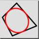

Ceci est une traduction automatique.
Barre d'outil / icône :  Menu : Dessin > Ellipse > Inscrite dans quadrilatère Raccourci : E, Q Commandes : ellipseinscribedquad | eq
Dessine une ellipse qui est inscrite dans un quadrilatère.